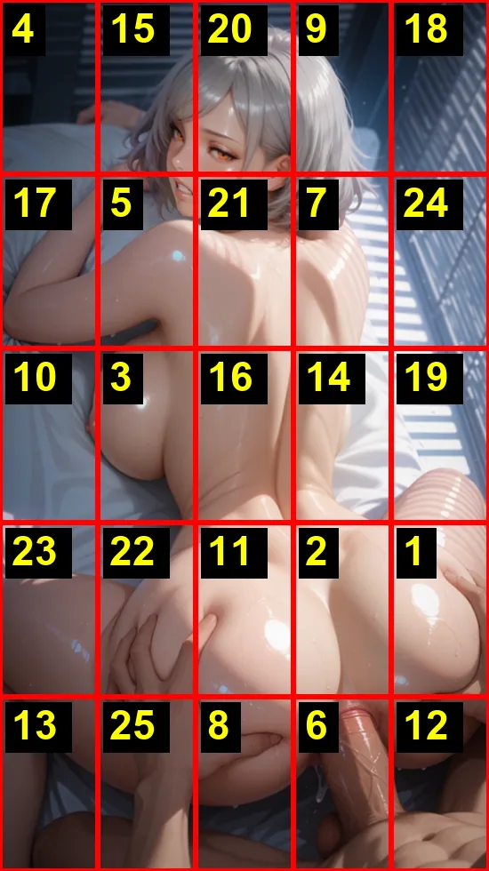
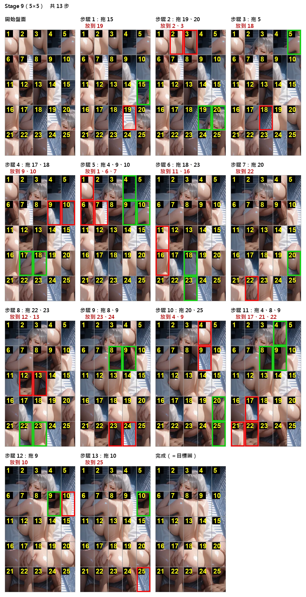
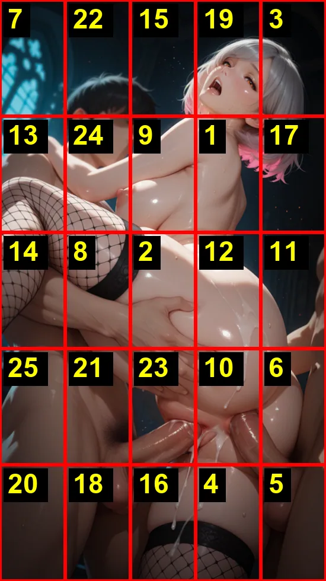
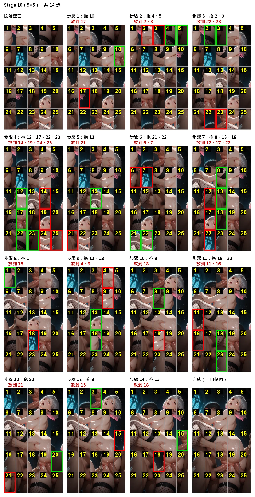

這一期每關的最少步數解法。

| c1 | c2 | c3 | c4 | c5 | |
|---|---|---|---|---|---|
| r1 | 4 | 15 | 20 | 9 | 18 |
| r2 | 17 | 5 | 21 | 7 | 24 |
| r3 | 10 | 3 | 16 | 14 | 19 |
| r4 | 23 | 22 | 11 | 2 | 1 |
| r5 | 13 | 25 | 8 | 6 | 12 |
| 拖曳（綠框） | 放到（紅框） | |
|---|---|---|
| 1 | 15 | 19 |
| 2 | 19、20 | 2、3 |
| 3 | 5 | 18 |
| 4 | 17、18 | 9、10 |
| 5 | 4、9、10 | 1、6、7 |
| 6 | 18、23 | 11、16 |
| 7 | 20 | 22 |
| 8 | 22、23 | 12、13 |
| 9 | 8、9 | 23、24 |
| 10 | 20、25 | 4、9 |
| 11 | 4、8、9 | 17、21、22 |
| 12 | 9 | 10 |
| 13 | 10 | 25 |


| c1 | c2 | c3 | c4 | c5 | |
|---|---|---|---|---|---|
| r1 | 7 | 22 | 15 | 19 | 3 |
| r2 | 13 | 24 | 9 | 1 | 17 |
| r3 | 14 | 8 | 2 | 12 | 11 |
| r4 | 25 | 21 | 23 | 10 | 6 |
| r5 | 20 | 18 | 16 | 4 | 5 |
| 拖曳（綠框） | 放到（紅框） | |
|---|---|---|
| 1 | 10 | 17 |
| 2 | 4、5 | 2、3 |
| 3 | 2、3 | 22、23 |
| 4 | 12、17、22、23 | 14、19、24、25 |
| 5 | 13 | 21 |
| 6 | 21、22 | 6、7 |
| 7 | 8、13、18 | 12、17、22 |
| 8 | 1 | 18 |
| 9 | 13、18 | 4、9 |
| 10 | 8 | 18 |
| 11 | 18、23 | 11、16 |
| 12 | 20 | 21 |
| 13 | 3 | 15 |
| 14 | 15 | 18 |
